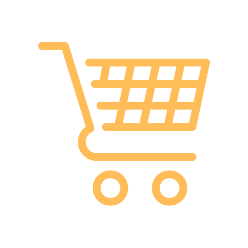
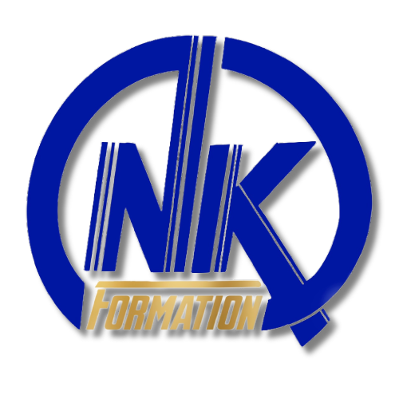
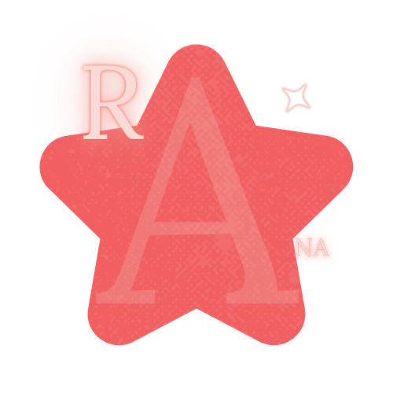
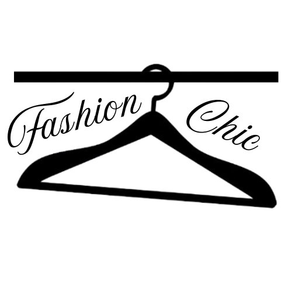
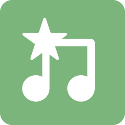
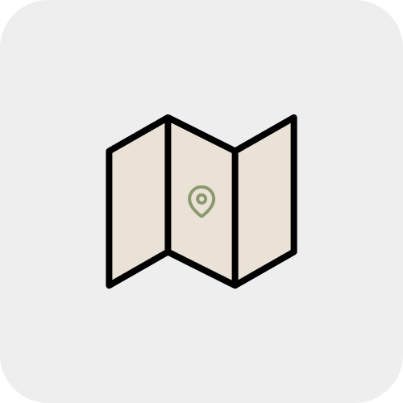
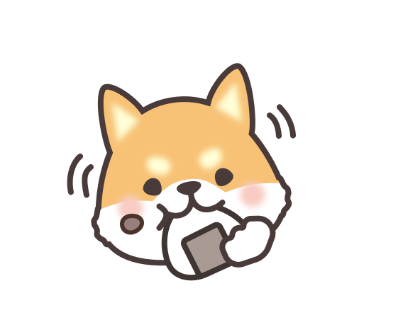

Jeu du moment
Minecraft
De l'idée initiale au code fonctionnel : je transforme les concepts en interfaces vivantes. Explorez mes projets et prenez contact !
Découvrons mon univers ensemble.
Coucou, Je suis Anaëlle. Je suis passionée par le développement web/mobile et le design.
J'aime prendre une simple idée, esquisser son aspect visuel, puis la regarder s'animer et devenir pleinement fonctionnelle grâce au code.
En tant que développeuse, je vois chaque projet comme un terrain de jeu où la logique rencontre la créativité. J'aime concevoir des expériences qui ont du sens, où le design et la technique parlent le même langage.
Curieuse de tout ce qui raconte une histoire, que ce soit à travers un roman, un objectif photo, un jeu vidéo, une chanson ou le bout de ma plume, j'apporte cette même sensibilité artistique à mes projets numériques.
Curieux d'en savoir plus ? Discutons !
Minecraft
Stupid Song - Olivia Rodrigo
A Good Girl's Guide To Murder - Holly Jackson
Voici quelques-uns des projets sur lesquels j'ai travaillé.
Avril 2024
Projet Scolaire
Mise en place d'un Pokédex interactif avec récupération des données depuis une API.
Pkédex interatif.
Premier projet individuel (Bachelor Informatique)
Concevoir et développer une application web dynamique permettant de rechercher et d'afficher les caractéristiques de différents Pokémon. L'enjeu principal était d'apprendre à connecter une interface utilisateur à une API externe en gérant l'affichage de données en temps réel.
S'agissant de mon tout premier projet individuel, j'ai assuré l'ensemble du cycle de développement de A à Z : de la réflexion de l'interface jusqu'à la logique JavaScript de récupération des données.
Mai 2024
Projet Scolaire
Application de gestion de tickets pour une entreprise.
Application de gestion de tickets de frais pour une entreprise.
Projet de groupe (Bachelor Informatique).
Créer une application web permetttant aux collaborateurs de l'entreprise fictive de gérer leurs notes de frais professionnel de manière centralisée. L'application devrait couvrir l'ensemble du cycle de vie des tickets, de la saisie à la suppression, en passant par le suivi et l'authentification.
Dans le cadre de ce premier projet collectif, j'ai occupé une double responsabilité : responsable du développement Front-End pour la création des interfaces utilisateur, et vice-chef d'équipe, rôle dans lequel j'ai notamment encadré la rédaction et l'harmonisation de la documentation globale du projet.

Février 2024
Projet Scolaire/Projet Personnel
Application de gestion de supermarché pour la gestion des produits et des commandes.
[Présentez le contexte et l'objectif de l'application.]
[Expliquez votre contribution, un défi rencontré et comment vous l'avez résolu.]
Non disponible

Juin-Juillet 2024
Projet professionnel
Refonte d'un site web de formation professionnelle.
Refonte globale d'un site web de formation professionnelle pour améliorer l'expérience utilisateur et la performance du site.
Stage de fin de 1ère année de Bachelor Informatique (Durée: 2 mois).
Moderniser l'image de marque de l'entreprise et optimiser l'expérience utilisateur (UX) afin de faciliter la découverte des formations. Le site existant nécessitait une remise au goût du jour de son interface graphique toutes en gardant les informations principales de l'ancien site.
Initialement prévu en trio avec des camarades de classe, le projet s'est principalement concrétisé en duo. J'ai pris une part active dans l'ensemble du projet, du design à l'intégration. cette dynamique de binôme restraint nous a poussés à renforcer notre communication, à mieux répartir la charge de travail et à faire preuve d'adaptabilité pour tenir les délais.
Non disponible

Octobre 2024
Projet Scolaire
Workshop d'une semaine. Création d'un site internet pour un restaurant.
Création complète d'un site web pour un restaurant fictif.
Workshop intensif d'une semaine (Bachelor Informatique).
Imaginer, concevoir et développer la vitrine digitale d'un restaurant de A à Z. Le site devait offrir une expérience immersive aux clients (ambiance visuelle, découverte du concept) tout en étant pratique (consultation du menu, informations pratiques, réservation ou contact).
Au sein d'une équipe pluridisciplinaire de 6 personnes (divisée entre 3 profils back-end et 3 profils front-end), j'ai pris en charge la conception et l'intégration de la page d'acceuil et la page menu. J'ai mené ces deux pages de bout en bout : de la création des maquettes graphiques jusqu'à leur codage en front-end.
Non disponible

Octobre 2024
Projet Scolaire
Gestionnaire de tâches pour la gestion des activités d'entreprise.
Conception et développement d'un gestionnaire de tâches d'entreprise.
Projet de groupe (Bachelor Informatique).
Créer une application web permettant de structurer et suivre les activités au sein d'une entreprise. L'outil devait gérer l'attribution des rôles (utilisateurs et groupes), l'affection et la validation des tâches, ainsi que le suivi statistique de la progression via des tableaux de bord personnalisés.
Au sein d'une équipe de 4 personnages (2 sur le backend et 2 sur le design), j'ai pris l'initiative d'élargir mon champ d'action pour mener le projet à terme. Sur la partie design, j'ai concu la grande majorité des maquettes de l'application (ma camarade s'étant concentrée sur les pages d'inscription et de connexion). Côté développement, j'ai pris en charge le codage de l'intégralité du site web.

Avril à Juillet 2025
Projet Scolaire
Gestionnaire de stock textile pour une entreprise de vente de vêtements.
FASHION CHIC — Application web de gestion de stock textile (Agence INFO' CHAS)
Projet de fin d'année de groupe (Bachelor Informatique)
Moderniser la gestion de stock d'une entreprise de prêt-à-porter qui utilisait jusqu'alors de simples fichiers Excel. À travers notre agence fictive INFO' CHAS, nous avons conçu de A à Z l'application FASHION CHIC : une solution sur-mesure pour centraliser, suivre et optimiser l'inventaire des collections de vêtements.
Malgré un effectif réduit au fil du projet suite à des départs et imprévus, nous avons fait le choix de maintenir le cap à deux. J'ai assumé l'intégralité de la création de l'application web FASHION CHIC (branding, maquettes UX/UI, développement front-end, logique métier et base de données), tandis que mon binôme s'est concentré sur l'infrastructure et l'hébergement.

Janvier à Mars 2026
Projet Personnel
Application de musique avec fonctionnalités de lecture et de gestion de playlist locale.
Lecteur audio desktop local
Projet personnel en autonomie
Concevoir et développer une application exécutable (.exe) permettant de lire et gérer une bibliothèque musicale stockée localement sur son ordinateur. L'enjeu était de créer une interface fluide et moderne capable d'interagir directement avec les fichiers du système.
Projet mené en autonomie, de la réflexion sur l'interface (UI/UX) au choix de l'architecture logicielle et au packaging de l'exécutable.
Non disponible

Septembre-Octobre 2026
Projet Personnel
Application web de gestion de carnet de voyage.
Carnet de voyage digital & communautaire
Projet personnel (Web & Mobile)
Concevoir et développer une plateforme sociale permettant aux voyageurs de documenter, cartographier et partager leurs aventures. L'application associe suivi géographique, narration multimédia et mécanique de gamification autour du voyage.
Conception et développement en autonomie complète (Design UX/UI, architecture front-end, logique métier et back-end).

Novembre 2026
Projet Personnel
Tamagotchi interactif - Jeu de compagnon virtuel.
Tamagotchi interactif - Jeu de compagnon virtuel.
Projet personnel (Design & Développement Web)
Concevoir et développer un jeu web inspiré du célèbre Tamagotchi, alliant illustrations originales et mécaniques de jeu en temps réel. L'utilisateur crée son compagnon, veille sur ses besoins vitaux au fil du temps et le fait évoluer à travers un système de niveaux et de sauvegarde persistante.
Projet réalisé en autonomie : de l'illustration vectorielle des personnages sur Figma jusqu'au développement de la logique de jeu et de l'interface web.
Voici un aperçu de mon parcours académique et professionnel.
Réflexion & créativité
Mon parcours commence par la philosophie, qui m'a appris à structurer ma pensée, questionner la logique et développer un attrait pour l'écriture. Ajouté à des expériences précoces axées sur le visuel et la création, où le sens du détail est clé, j'ai très tôt developpé une sensibilité pour ce qui est à la fois beau, logique et structuré.
Premiers pas dans le numérique
Naturellement attiré par le numérique, j'ai suivi deux ans de Bachelor en informatique. C'est durant cette période, notamment grâce à un stage dédié à la refonte complète d'un site web, que j'ai eu la confirmation de mon attrait pour le web : la capacité de transformer un concept visuel en une interface concrète.
Aujourd’hui
Depuis un an, je poursuis mon cheminement en autodidacte. Cette démarche autonome me permet d'approfondir mes compétences à mon rythme, de réaliser des projets personnels de A à Z et de parfaire la synergie entre design UI/UX et code Front-End.
Un projet en tête ?
Une question, une idée ou une opportunité ? Je serais ravie d’en discuter avec vous.
Écrivez-moi par email